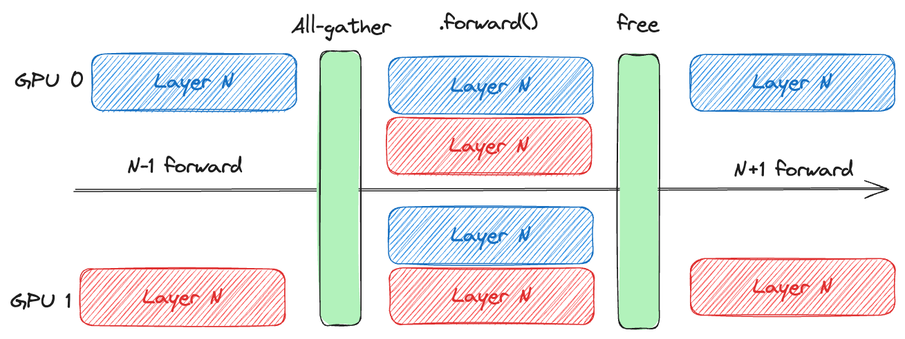
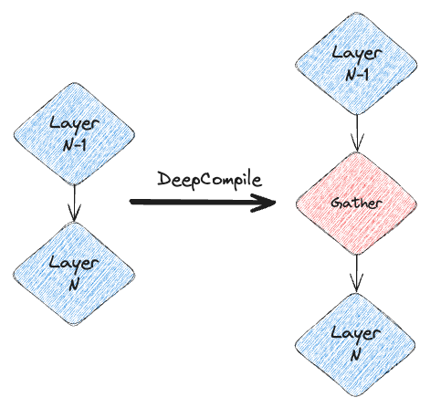
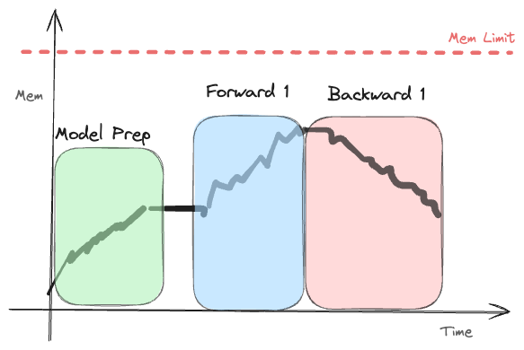
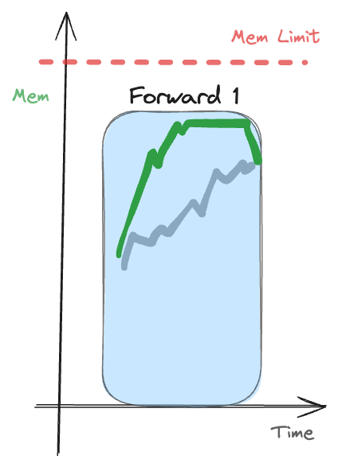

DeepCompile
Introduction
In release 0.16.6 of DeepSpeed, you can find a new interesting feature. It’s called DeepCompile, in the release notes it’s hidden as the last feature (who reads those, right?) and if friend didn’t tag me with DeepSpeed’s post on X, I would have probably missed it. So why is it interesting?
DeepSpeed is a framework for distributed training, it’s a pretty big library, most notable feature being probably the implementation of ZeRO. With DeepCompile, they enable compiler-based optimizations for ZeRO algorithms. Why should we care you might ask? There currently is a lot of work going on in the field of optimizing distributed training. The common problem is that communication operations (all-gather, reduce-scatter, etc.) which are ever-present in the training loop, are inserted at runtime, making them hard to optimize.
In the rest of this article, I’ll assume you are familiar with communication primitives and basics of distributed training.
ZeRO
I know I said I’ll assume you’re already familiar with distributed training, but I think it’s important to give a quick recap of ZeRO. ZeRO makes training of models with arbitrary sizes possible, given enough GPUs are available. It works by partitioning the optimizer state (ZeRO-1), gradients (ZeRO-2) and model states (ZeRO-3). Each stage includes the previous one, therefore ZeRO-3 includes ZeRO-1 and ZeRO-2. With this partitioning, we can reduce the memory footprint of the training loop to arbitrary size. Imagine this scenario:
\[ \text{memory\_footprint} = \text{model\_size} + \text{optimizer\_state\_size} + \text{gradient\_size} \]
memory_footprint is roughly (though not exactly in practice) the sum of the sizes of the model, optimizer state and gradients. This can grow infinitely, at some point exceeding our GPU memory. But ZeRO-3 comes to the rescue. Remember me saying that ZeRO-3 partitions all 3 components of the previous equation?
\[ \text{memory\_footprint}_{ZeRO-3} = \frac{\text{model\_size} + \text{optimizer\_state\_size} + \text{gradient\_size}}{\text{num\_gpus}} \]
This equation can decrease the memory footprint on a single GPU by a factor of num_gpus. This means that we can train models with arbitrary size, as long as we have enough GPUs.
ZeRO is implemented in DeepSpeed, also in raw PyTorch as a feature called FSDP.
ZeRO training loop
I mentioned that each GPU holds only a partition of the model, optimizer state and gradients. But how can the training loop work then? Before a part of the model is used (its .forward() method is called), it is all-gathered across all GPUs. Then after its forward pass, the memory is freed (usually, though this can be controlled by the user). When this layer is again needed for backward pass, it’s all-gathered again (if it was freed before). Then at the optimizer step, each GPU is responsible for updating only its partition of the model.
 Figure 1: Visualization of the ZeRO training loop showing how model parameters are partitioned across GPUs, all-gathered when needed for forward/backward passes, and then freed to conserve memory.
Prefetching
If you’re already familiar with this, or curious enough, you might have identified part of the problem. GPUs are very good at overlapping communication and computation. This allows us to start the all-gather for the current layer while the previous layer is still present in the GPU memory. Why can’t we start even earlier, beginning the all-gather operation before the pre-previous layer? We can! This method is called prefetching. But how do we know when to stop/start the prefetching? If we start too early, we risk having too many layers in the memory -> RuntimeError: CUDA error: out of memory. If we start too late, the layer might not be gathered in time for its forward pass -> slow training 💤. PyTorch implementation addresses this by prefetching maximum of 1 layer ahead, therefore maximum of 2 layers are in memory at the same time. But this is only a somewhat conservative heuristic. We can do better (and DeepCompile does exactly that, more on that later).
Resharding
If we have enough memory left, do we need to free the memory after the forward pass of the layer? No, we don’t! PyTorch controls this via options like ShardingStrategy.SHARD_GRAD_OP for FSDP1 and reshard_after_forward=False for FSDP2. This way, the layer is kept in memory after its foward pass until it’s again needed for backward. But this is again a binary choice, either we keep the layer in memory or we don’t. We can do better. Again, DeepCompile does!
Offloading
Some memory parts, like the optimizer state, are not needed for the training loop. The optimizer state is only needed for the parameter update (after the backward pass). Do we need to keep it in GPU memory? No, we don’t. But how do we know how much we can offload? Offloading too much takes too long and offloading too little results in few memory savings. There again isn’t a good general solution. DeepCompile has one.
DeepCompile
For the last 3 paragraphs I was talking about how we have problems and DeepCompile solves them. Let’s see how.
How does DeepCompile work? It’s a compiler that operates on the IR of the training loop, it utilizes existing ML compilers (like torch.compile or XLA) to extract the IR of the computation. Then, it adds communication operations as first class citizens to this graph.

Figure 2: Very simplified representation of the IR changes made by DeepCompile. This pass also includes releases of the memory
Now, we have a full graph of the training loop, with communication included. So how does the optimization work? Optimizations made by DeepCompile are organized into a sequence of compiler passes. In-between passes, there is a profiling step to see the current memory footprint and optimize according to it. This profiler pass collects the memory usage over time, time spent on each operation and so on. To sanity-check this and avoid problems arising from non-deterministic execution, DeepCompile also periodically runs the training loop to account for other factors.
In the following sections, I’ll be going through the optimization passes in detail. Let’s consider a simple memory footprint of the training loop, that I’ve drawn myself - I was too lazy to spin up a multi-GPU machine and run something (I know I could be an artist, but AI pays more).
It looks like this:

Optimization passes
- Proactive Prefetching In the Prefetching section, we discussed how all-gather operations can be initialized before the layer is used. This pass does exactly that. Based on the memory usage from the profiler, it attempts to schedule the all-gathers operations as early as possible, while respecting the memory limit. So how would this look in the diagram?

Figure 3: Proactive prefetching: The green line represents the new memory usage, it is higher than the original one, but stays below the memory limit. You can see that we prefetch as early as possible, maximizing the memory, but staying below the limit. I think it’s easier to understand this in code, so here’s how it could be implemented:
def proactive_prefetching_pass(graph):
unscheduled_all_gathers = []
new_graph = Graph()
for node in reversed(graph):
if not isinstance(node, AllGather):
# if it's not an all-gather, add to the new graph
new_graph.append(node)
else:
# Get memory requirements for all unscheduled all gathers
unscheduled_mem_usage = sum([
node.memory_usage for node in unscheduled_all_gathers
]) + node.memory_usage # current all gather
# check if current all gather still fits into the memory limit
# profiler.current_memory_usage returns the memory usage at the current step
total_required_mem = (
unscheduled_mem_usage + profiler.current_memory_usage(node)
)
if total_required_mem < memory_limit:
# if it fits, add to the unscheduled all gathers
unscheduled_all_gathers.append(node)
else:
# if it doesn't fit, schedule the current all gather
scheduled_all_gathers = fuse(unscheduled_all_gathers)
new_graph.append(scheduled_all_gathers)
unscheduled_all_gathers = [node]
# schedule the last unscheduled all gathers
last_scheduled_all_gathers = fuse(unscheduled_all_gathers)
new_graph.append(last_scheduled_all_gathers)
return new_graphAlgorithm 1: Proactive Prefetching
This pass traverses the graph in reverse order, collects all-gather operations that fit within the memory limit, and as adding another would exceed the memory limit, fuses them together and schedules them, effectively moving them as early as possible. You can notice a fuse operation we haven’t talked about. This function fuses multiple all-gather operations into a so-called bucket. This is done because communication operations involving small data sizes can be inefficient.
- Selective Resharding In the Resharding section, we discussed how we can keep the layer in memory after using it in forward, then reusing it in backward. This pass does exactly that. If there is still some memory left after applying the previous pass, we can use this available memory to keep some layers unsharded (i.e. not freeing the memory after the forward pass). We decide on which layers to keep, using the following heuristic:
\[
\frac{\text{communication\_time}_{op_i}}{\text{data\_size}_{op_i}}
\] , where \(op_i\) is the i-th operation in the graph and \(\text{communication\_time}_{op_i}\) is the time taken for its communication and \(\text{data\_size}_{op_i}\) is the size of the data communicated. The goal is to esentially maximize the communication time saved, while minimizing the memory usage.
- Adaptive Offloading
Again, this pass is very simple, DeepCompile basically detects if we’re lacking memory, and if so, it partially offloads the optimizer state to the CPU. When sufficient memory becomes available again, it begins reloading the state back to the GPU. This way, we don’t go OOM, however, we avoid unecessary time spent transferring data to the CPU and back.
Conclusion
This is my simplified summary of the DeepCompile optimizations. You can check the original paper here, I really reccommend reading it (Which I initially missed, reading the underlying PR implementing the compiler first lol). To summarize, these optimizations are possible due to making communication operations first class citizens in the IR, this enables the compiler to optimize these operations.
The heuristics guiding these passes rely on memory usage timing information, which is gathered by sophisticated profiling. A small caveat to note: This method typically doesn’t drastically reduce peak memory usage; instead, its primary benefit lies in optimizing the training loop’s throughput and speed, areas where it excels.